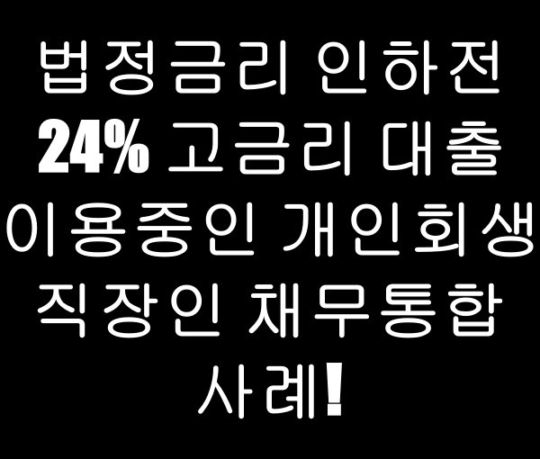
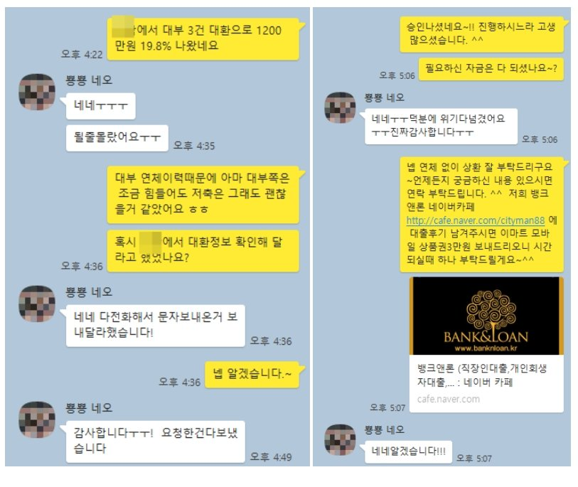

법정금리 인하전 24% 고금리 대출 이용중인 개인회생 직장인 채무통합 사례!

안녕하세요~ 뱅크앤론 임용현부장입니다. ^^
오늘은 법정금리 인하 전인 24% 고금리 대부업 대출 이용중인 개인회생중인 직장인 고객님의 대환대출 사례를 안내해 드리겠습니다.
문의 주신 고객님은 재직 4년에 사대보험 되시고 연봉은 2400정도 였으며, 개인회생 16회 납부, 월변제금 81만원에 미납은 없었습니다.
기존에 법정금리 인하전에 받은 24% 대부업 대출 3군데에서 300만원씩 총 900만원 이용중이셔서, 대환 및 추가자금으로 문의 주셨습니다.
변제금이 조금 높기는 하지만 대부업금액이 많지는 않아서 큰 문제 없이 진행이 가능할 줄 알았지만, 최근 대부업 연체가 이틀 있었고 문의 주신 날 당일에 연체 해결이 되셨습니다.
대부연체 이력으로 대부업 진행은 어려워 저축상품으로 안내해 드렸으며, 기존 채무 3군데 통합하면서 추가자금 300만원까지 총 1200만원 19.8% 금리로 승인 받으실 수 있었습니다.
기존보다 금리도 낮아지고 채무도 한건으로 통합하면서 추가자금까지 받게 되셔서 고객님도 매우 만족해 하셨습니다.
아래는 해당 고객님과 상담한 실제 카톡 대화 내용이오니 참고하시어 많은 도움 되셨으면 좋겠습니다. 감사합니다. ^^
